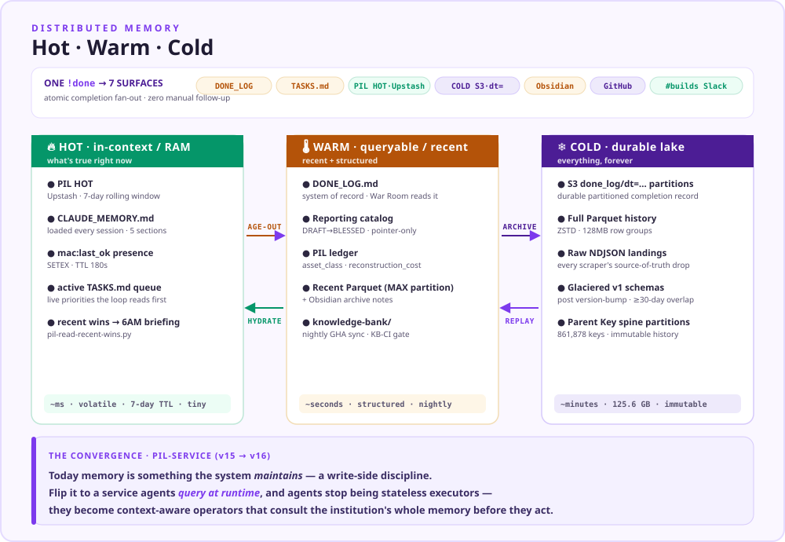
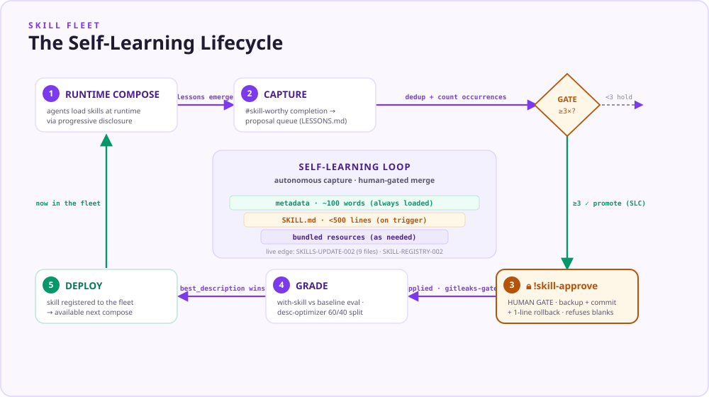
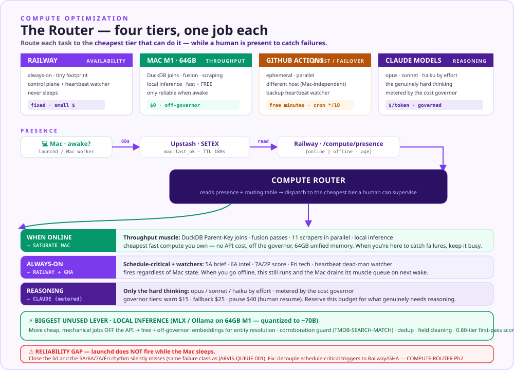

One intelligence platform that turns the media industry's fragmented audience, content, and rights data into a single, decision-grade terminal — and a self-learning system that gets cheaper and more autonomous every time it answers.
The platform exists to do one thing the industry has never had: give the people who analyze, price, and trade media a single comparable language for audiences, content, and rights across every market. The moat is not the dashboards — it is the canonical spine underneath them, born from a decade of solo IP.
The SAS-MASTER Parent Key, the Data Orchestration Layer, and the MM-Asset-ID algorithm are Shiv's solo IP, developed on RSG's Databricks platform 2018–2024 and never productized commercially. SaSMaster is the first commercial implementation — a clean-room rebuild that owns its lineage end to end.
Three verbs × three objects = nine cells. You cannot build nine. The entire system is aimed at one wedge cell where the data edge is sharpest and the catalog deposit compounds fastest.
| Content | Advertising | Marketing | |
|---|---|---|---|
| Analyze | ◆ WEDGE candidate programming research — home turf, gold sets already want to live here | audience reach & curves | promo & campaign lift |
| Price | ◆ WEDGE candidate avails / valuation — higher willingness to pay | inventory & rate optimization | spend allocation |
| Trade | content acquisition & sales | exchange / programmatic | partnership deals |
Capability is not a product. The toolkit becomes a terminal when every component is pointed at one wedge and wired into a single labeled-feedback loop. Six work stages on the rim; the control plane at the hub governs every stage and meters autonomy. The one number that matters is the share of outputs shipping with no human touch — and whether it is safely rising.
DEPOSIT-GATE-001 P1+P2 shipped 2026-06-07. The reporting-catalog schema + curator agent + gate wiring are built; a slice cannot reach DONE without a blessed, pointer-only catalog entry. awaiting bless
Every report earns twice — once as revenue/reach, once as a certified asset that makes the next report cheaper. A research practice that doesn't deposit is a content mill.
Only the connective tissue between stages 3→4→5→6 — the labeled-feedback wiring. Compute, memory, agents, and skills are already live.
Read bottom-up: raw data is fused into a certified spine, held in distributed memory, distilled into knowledge and insight, produced by an agent + skill fleet, all governed by the JARVIS control plane, and surfaced as products. Each layer is upgradeable in place behind the control plane.
A 125.6 GB lake on s3://sasmaster-2026, governed by a locked-paths registry. Every scraper lands NDJSON; a separate DuckDB job converts to ZSTD Parquet with the parent key computed at write time. Movies and TV are never merged; schema changes are additive or they force a version bump.
parent_key = COALESCE(imdb_tconst, 'tmdb_mov_'||tmdb_movie_id, 'tmdb_tv_'||tmdb_tv_id)Invariants: parent_key non-null on every row · eidr_id NULL in v1 (Phase 1b backfill) · movies & tv_series never merged · ISO YYYY-MM-DD partitions · ZSTD, 128 MB row groups · readers use MAX(partition_date), never a latest/ alias.
Every mined row is PIL class INTERNAL by default and carries source · source_url · ingested_at · schema_version. The doctrine is GENERALIZE-TO-PUBLISH: public artifacts ship the generalized shape — a trend, a ratio, a SaSMaster index — never the raw compiled table.
| Record class | Current | Target | Certified | Coverage |
|---|---|---|---|---|
| Movies | 556,466 | 712,971 | 247,408 | |
| TV series | 2,711 | 213,000 | 0 | |
| Episodes | 16,409 | 6,000,000 | 0 |
Target 712,971 = verified IMDB movie universe (SASMASTER_PARENT_KEY_2025). 272K tmdb-only titles are a permanent untyped boundary. EIDR backfill: 247,425 IDs matched (28.7% of 861,878).
| Prefix | Phase | Status | GB | Entity counts | Updated |
|---|---|---|---|---|---|
tmdb_dev/ | 1 | running | 33.4 | 1.20M movies · 221.9K tv · 6.01M eps · 4.72M people | 06-07 |
imdb/ | 1 | live | 4.3 | 2.37M movies · 370.7K tv · 9.74M eps · 15.37M people | 05-30 |
parent_keys/ | 1 | live | 0.73 | 861,878 keys · 589,814 matched | 06-07 |
nielsen/ | 2a | live | 83.9 | MIT 15 tables · AMRLD 36 rec types | 05-26 |
eidr/ | 1b | live | 0.43 | DOI spine 1,556 + 14,775 candidates | 05-29 |
gracenote/ · fyi/ · opus/ | 2a | landing | ~0.02 | GN 17.2K mov / 47.9K tv · FYI 17.4K/64.6K · Opus 33.9K mov | 06-05 |
Two memory surfaces across three storage tiers. A human-readable session memory that orients every agent run, and a machine-readable provenance/IP ledger (PIL) that records why each asset exists and what it would cost to rebuild — held across hot (Upstash, ~ms), warm (recent + structured, ~seconds), and cold (the durable S3 lake, ~minutes). Together they let an autonomous loop reason about its own history.

Loaded at the start of every session (cat ~/SaSMaster/CLAUDE_MEMORY.md && cat TASKS.md) and rewritten by update-memory.sh. Five standing sections keep strategy and state coherent across runs:
Every catalog/asset entry carries PIL fields: rationale · reconstruction_cost · asset_class · pil_status. This is the structural record of the moat — it lets the system value its own IP and enforce the GENERALIZE-TO-PUBLISH wall at the asset level.
Data becomes knowledge through a nightly-synced knowledge bank; knowledge becomes a defensible product through the reporting catalog (the deposit slot); and every published claim is held to a verification standard so the terminal is trusted, not just fast.
S3 prefix knowledge-bank/, synced nightly by GitHub Actions (kb-nightly-sync.yml) via least-privilege IAM user sasmaster-ci-kb-sync. KB-CI integrity + KB-INTEGRITY checks verify entries, S3 paths, and orphans.
The insight engine's memory. Schema: report_id · domain · data_lineage · methodology · chart_spec · viz · takeaways_template · tutorial + PIL fields. Inherit-via-pointer (≤300 chars, never copies). Lifecycle DRAFT→BLESSED→RETIRED — only Shiv blesses.
The GenAI companion present on every screen. Roadmap runtime wires the catalog into a Comprehender (fail-safe-to-current) and a Claim-verify methodology that is fail-CLOSED — an unresolvable claim is HELD, never auto-passed.
SCOOP-CATALOG-RUNTIME gatedA three-tier fleet: native scheduled agents that run the business on cron, build subagents that execute work under model routing, and a marketplace of specialist agents on call. 11 running and 14 live at last snapshot.
| Agent | Cadence | Status |
|---|---|---|
| JARVIS 🤖 control plane | always on | |
| Media Intel 📡 (13-source) | 6AM daily | |
| TMDB Daily 📺 | 5AM daily | |
| SEC EDGAR 📑 | 6:30AM | |
| Security Watchdog 🔐 | 5:30AM | |
| Railway Monitor 🛤️ | 15 min | |
| Tech / Financial / IAB Intel | weekly | |
| Data Guardian 🛡️ (AMRLD anomaly gate) | post-ingest | never run |
| Gracenote OnConnect 🎬 | on demand | spine-gated |
| Subagent | Role | Model |
|---|---|---|
| Autonomous Coder ⚡ | build executor | Sonnet 4.6 |
| Data Modeler 📐 | schema · Parent Key | Opus 4.7 |
| Viz Evaluator 📊 | 14 renderers vs npm | quarterly |
| Nielsen Orchestrator 📡 | staleness → pull → validate | Tue 5PM |
| Mac Worker 💻 | 64 GB compute lane | 5-min beat |
31 marketplace agents on call — 17 Tier-1 (python-pro, ai-engineer, prompt-engineer, security-auditor, agent-teams…) and 14 Tier-2 (backend-architect, cloud-architect, ml-engineer, mlops-engineer…), all idle until summoned.
not_authed; Weekly Review: credit balance) — both non-load-bearing, queued for repair.Skills are the platform's reusable expertise — domain knowledge, build doctrine, and procedures the agents compose at runtime. The self-learning loop is what turns a one-off lesson into permanent capability: patterns recur, get promoted into skills, and every future run starts smarter. Logging is autonomous; skill merges stay human-gated by design.

Three-level progressive disclosure: ~100-word metadata → <500-line SKILL.md → bundled resources. The skill-creator runs with-skill vs baseline prompts, grades the delta, and a description-optimizer (60/40 train/held-out) selects the best_description for reliable triggering.
Work tagged #skill-worthy queues a skill update on completion. SKILL-REGISTRY-002 promotes patterns that recur ≥3 times from LESSONS.md into SKILL.md via the SLC pipeline. This is the wire that makes the system compound.
JARVIS is the hub of the flywheel: it routes work, governs every stage, and meters how much ships autonomously. It runs as an HTTP Events API on Railway (the Socket Mode daemon is retired), with a dead-man heartbeat and a GitHub-Actions failover worker so the loop survives the Mac going offline.
§2 Quality Gates: flag the top-3 critical behaviors up front; they become QA pass/fail. Never self-certify a fix — a QA agent runs after every phase deploy.
§15 Change Gate: every risky change is filled against five columns before it ships —
§10 Security: every Railway route needs x-api-key or Slack HMAC — never open; gitleaks must pass; new S3 paths join the locked-paths registry.
The doctrine is SUPERVISED-AUTONOMY: a human bless is the training label, and the deliverable of any phase is the gold set future runs are graded against. Autonomy rises only as confidence sustains.
drain_heartbeat.json), Railway watcher + GHA queue-heartbeat-watcher.yml, pmset autorestart self-heal, INFRA-FAILOVER kill-test PASS.Intelligence is metered. The platform routes each job to the cheapest sufficient model, caches the hot context every agent re-reads, and runs under a hard governor that pauses spend before it ever surprises you.
Three-tier haiku + sonnet + opus: Haiku for embed/classify, Sonnet for execution, Opus for planning. The cheapest model that clears the confidence floor wins the job.
Caching the hot context — CLAUDE_MEMORY.md and agent reads — is projected to cut input tokens 40–60%. Skill-file reads cache next. recommendation live
API track capped at $500/mo with daily tiers — warn $15 · fallback $25 · pause $40. A pause requires human resume; spend can never run away unattended.
Four tiers, one job each. A presence-aware router sends every task to the cheapest tier that can do it while a human is present to catch failures — heavy lanes on the local 64 GB M1 worker, schedule-critical triggers always on cloud, reasoning metered by the governor, with graceful degradation to API inference when local lanes are unavailable.

| Tier | The one job | Character | Cost |
|---|---|---|---|
| Railway | Availability | always-on, tiny — control plane + heartbeat watcher; never sleeps | fixed, small |
| Mac M1 · 64 GB | Throughput | the muscle — DuckDB joins, fusion, local inference, scraping; fast, but only reliable when awake | $0 · off-governor |
| GitHub Actions | Burst / failover | ephemeral, parallel, a different host; the backup watcher | free minutes |
| Claude models | Reasoning | opus / sonnet / haiku by effort — the genuinely hard thinking | $/token, governed |
The Mac emits mac:last_ok to Upstash every 60s (SETEX, TTL 180s); a Railway /compute/presence endpoint reads it and reports online/offline within ~3 minutes of a lid close. The router reads presence + a routing table and dispatches accordingly.
MLX/Ollama embed + classify endpoints with a fail-open client: on timeout or low confidence it falls back to the API — proven by killing a lane mid-job with no stall. DuckDB tuned for 64 GB (memory_limit + perf-core threads).
launchd does not fire while the Mac is asleep. The crons that run the daily rhythm — 5A briefing, 6A intel, 7A/2P self-score, Fri tech — live on the Mac. So the moment the lid closes, the rhythm silently misses. The Mac is configured as always-primary when it can only conditionally be primary.
The fix is the router itself: COMPUTE-ROUTER-001 Ph2 decouples schedule-critical triggers to Railway/GHA so they fire regardless of Mac state, while muscle work queues and drains on next wake. Tuning that compounds it: memory_limit set generously, threads = hw.perflevel0.physicalcpu (8–10 performance cores), and the 11 scrapers + fusion passes run concurrently, not serially.
① Bless REPORT-CATALOG + DEPOSIT-GATE. ② Lock the Substack/wedge theme. ③ Make "catalog entry blessed" a hard gate on every product slice.
The control plane — the only component touching all six stages. Get the autonomy dial instrumented and the rest of the fleet can evolve without rewiring the loop.
Is the share of outputs shipping untouched rising, safely, on its own? If yes, the platform is learning. If no, we're still a toolkit.